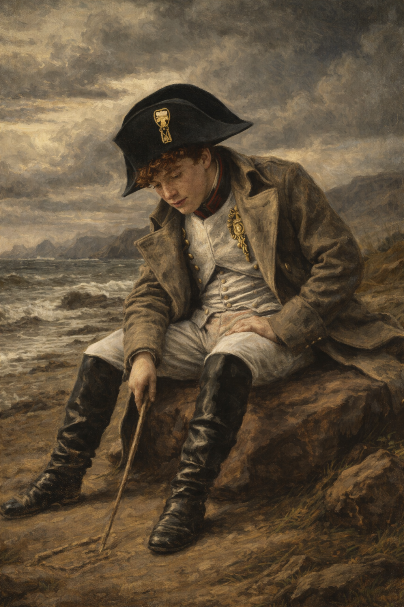
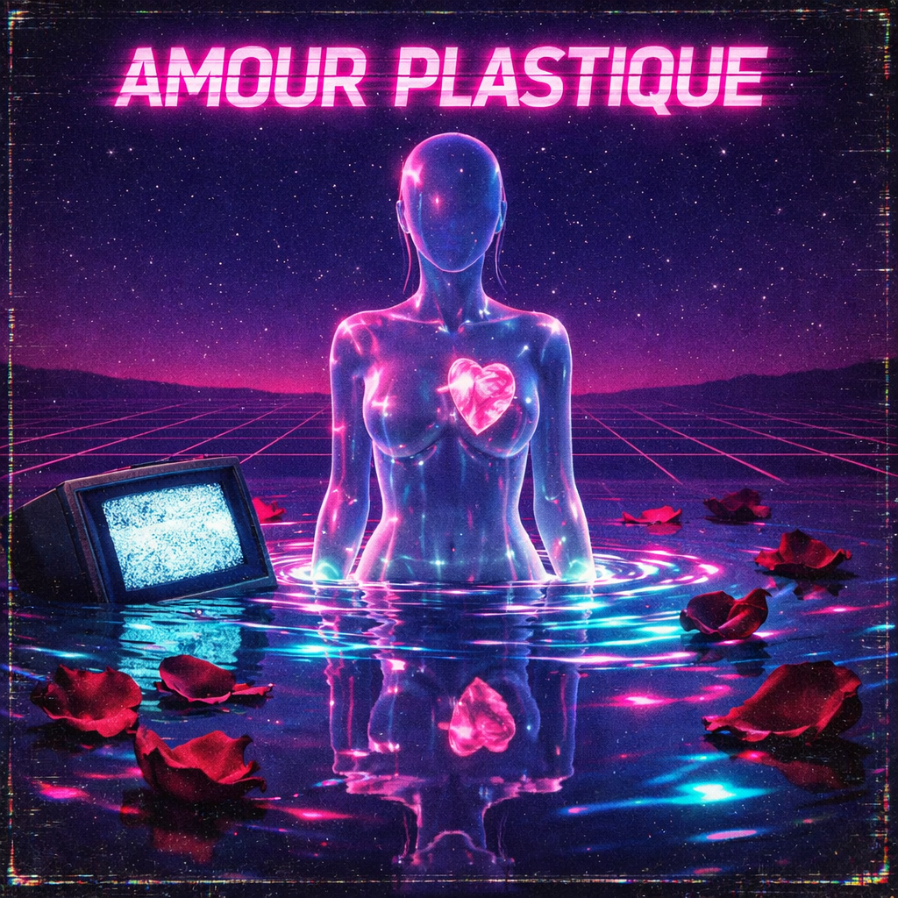

Amour
Plastique

"There is nothing we can do"
Exposé poésie
Vidéoclub
La chanson, de la poésie ?
Niobé · Mathéo · Damien
Partie 1 - Contexte
Naissance de Vidéoclub
Adèle Castillon
Née en 2001. YouTube dès 13 ans. Actrice dans "Sous le même toit" (2017). Voix du duo.
Matthieu Reynaud
Né en 2001. Fils de guitariste. Inspiré des années 70-80. Compositeur et producteur.
2001
Naissance des deux
2017
Adèle actrice
2018
Rencontre à Nantes, création, sortie
2021
Séparation du duo
Sujet écrivant : leur propre histoire
Rapport au monde : intime mais universel
Langage : synthwave, sensibilité contemporaine
Partie 1 - Contexte
Synthwave et electropop française
New Wave
années 80
French Touch
1990-2000
Synthwave FR
années 2010
Vidéoclub
2018
Synthétiseurs analogiques
Boîtes à rythmes
Reverb
Esthétique VHS
Nostalgie
Produit à la maison
22M
vues dès 2019
Single Diamant
certification 2025
50M
équivalents streams en France

Amour Plastique
Vidéoclub
Partie 2 - Analyse
Thèmes et analyse du titre
Champs lexicaux
Eau et mouvement
noie, vague, abîme, limbes, avalanche, coule
Obscurité
sombre, nuit, ombre, démons, abîme
Corps
peau, coeur, joues, poitrine, corps
Indicateurs de personnes
JE (dominant)
TU (intimité)
NOS (fusion)
Analyse du titre
AMOUR
vs
PLASTIQUE
Plan phonique : nasale douce [m] contre P explosif et finale abrupte. Contraste sonore voulu.
Plan sémantique : plastique = artificiel, société de consommation, jetable. Un amour de surface qui sonne creux.
Le titre annonce que la chanson dépasse le simple sentiment.
Partie 2 - Analyse
Champ phonique
Dans mon esprit tout divague, je me perds dans tes yeux
Je me noie dans la vague de ton regard amoureux
Et je m'abîme dans les limbes, sans fond, sombres, soufflés
Je me noie dans la vague de ton regard amoureux
Et je m'abîme dans les limbes, sans fond, sombres, soufflés
| Élément | Exemple | Effet |
|---|---|---|
| Rimes alternées | divague / yeux / vague / amoureux | Structure musicale, écho sémantique entre "divague" et "vague" |
| Paronomase | "divague" / "vague" | L'esprit divague comme une vague - forme et fond fusionnent |
| Assonances [u] | noie, joues, nous, sombre | Profondeur, engloutissement, aspiration vers le bas |
| Assonances [a] | divague, vague, âme, avalanche | Ampleur, ouverture vers un espace sans fond |
| Allitérations [s] | sombre, souffle, sombrent, sans fond | Glissement doux, quelque chose qui se dérobe |
| Vers longs et fluides | ensemble des vers | Sensation de vague et de flottement |
Partie 2 - Analyse
Champ morpho-syntaxique
Inversion
"Dans mon esprit tout divague"
L'espace intérieur avant l'action. Signal poétique : tout est subjectif, ressenti de l'intérieur.
Parallélismes
"Je me perds dans tes yeux / Je me noie dans la vague"
Construction identique, effet de vertige par accumulation.
Double parallélisme
"Qui es-tu ? Où es-tu ?"
Questions sans réponse. Dit le vide, la quête sans issue.
Anaphore du "je"
"je me perds... je me noie... je ne veux..."
Enfermement du personnage dans son propre point de vue. Obsession.
Anaphore "Et la nuit"
"Et la nuit..." (x2)
Cadre répété de la souffrance et du désir mêlés.
Anaphore structurelle
Refrain = reprise exacte du 1er couplet
Impossibilité de sortir de cet état. Prisonnier du texte comme le personnage l'est de ses émotions.
Partie 2 - Analyse
Champ sémantique - Figures de style
| Figure | Passage | Sens et effet |
|---|---|---|
| Métaphore | "la vague de ton regard amoureux" | Le regard comme une force irrésistible, on ne peut que se laisser emporter |
| Métaphore | "l'avalanche de mon coeur égaré" | Débordement incontrôlable des émotions |
| Métaphore filée | vague, noie, abîme, limbes, coule, avalanche | L'amour comme un naufrage progressif et inévitable sur tout le texte |
| Hyperbole | "jusqu'à ce que les roses fanent" | L'amour demandé jusqu'à l'éternité, au-delà de la mort des fleurs |
| Hyperbole | "nos âmes sombrent dans les limbes profondes" | L'amour touche à l'infini et à l'au-delà |
| Personnification | "mes tristes démons" | Les émotions négatives deviennent des êtres vivants |
| Synesthésie | "Je résonne en baisers" | Le son devient toucher : immersion sensorielle totale |
| Allusion | "dans ton coeur Roméo" | Ancré dans la tradition des grandes tragédies amoureuses |
| Oxymore implicite | "Amour Plastique" (titre) | Amour noble + artificiel vulgaire : tension irrésolue au coeur du texte |
| Périphrase | "le souffle lancinant de nos corps dans le sombre" | Évocation pudique de l'intimité physique |
| Paronomase | "divague" / "vague" | Parenté sonore et sémantique : l'esprit divague comme la vague |
Partie 2 - Analyse
Structure circulaire
Strophe A
Immersion amoureuse - le "je" se perd, se noie
↓
Strophe B
Nuit, douleur, démons
↓
"Qui es-tu ? Où es-tu ?"
Pivot - rupture brutale. Doute. Sortie de la transe.
↓
Strophe C
Ombre, doute, résignation
↺
Refrain final = Strophe A
Retour exact au point de départ
Structure circulaire
On revient au début sans avoir avancé. Pas un défaut - un choix. L'amour ne grandit pas, ne se résout pas. Il tourne en rond.
C'est une obsession.
Piégé dans le texte comme le personnage est piégé dans ses émotions.
Quiz
Question 1 / 4
Que signifie "plastique" dans le titre, selon notre analyse ?
Question 2 / 4
Quelle est la figure de style dans "je me noie dans la vague de ton regard amoureux" ?
Question 3 / 4
Qu'est-ce qu'une paronomase ?
Question 4 / 4
Comment décrire la structure de la chanson ?
Résultat
Partie 2 - Synthèse
Amour Plastique : au-delà du sentiment
Phonique
vagues sonores
engloutissement
vagues sonores
engloutissement
Morpho-
syntaxique
boucles
enfermement
syntaxique
boucles
enfermement
Sémantique
naufrage
tragédie
naufrage
tragédie
Obsession
&
artifice
&
artifice
L'amour comme naufrage. La répétition comme prison. Le plastique comme critique d'une époque.
Ce n'est pas une simple chanson d'amour. C'est un poème.
Partie 2 - Défense
Pourquoi cette chanson ?
Pourquoi avoir choisi
cette chanson ?
cette chanson ?
En quoi est-ce
un poème ?
un poème ?
Niobé
"Elle vient d'un endroit sincère. Et cette sincérité, elle se voit dans chaque vers."
Damien
"Ce qui me convainc, c'est la cohérence : chaque élément sert un seul et même propos."
Mathéo
"Une chanson que beaucoup connaissent mais qui cache autant de profondeur. C'est exactement ça qui est beau."

Partie 3 - Image originale
Notre image
Collage numérique · esthétique synthwave · palette néon
1
Silhouette translucide + coeur en plastique : l'artifice au centre. L'amour exposé, visible, mais fabriqué.
2
Pétales de roses sombres, bords noircis : référence à "aime-moi jusqu'à ce que les roses fanent". La fin inscrite dès le premier regard.
3
Télévision CRT submergée, écran en neige VHS : l'image filtrée, le monde artificiel. Les émotions regardées à travers un écran.
+
Composition circulaire : le reflet dans l'eau reprend les contours de la silhouette. Structure de la chanson en image.
Alors, une chanson
peut-elle être un poème ?
peut-elle être un poème ?
Oui.
Rigueur
Obsession
Artifice
Merci pour votre attention.
Niobé · Mathéo · Damien